Победа к юбилею
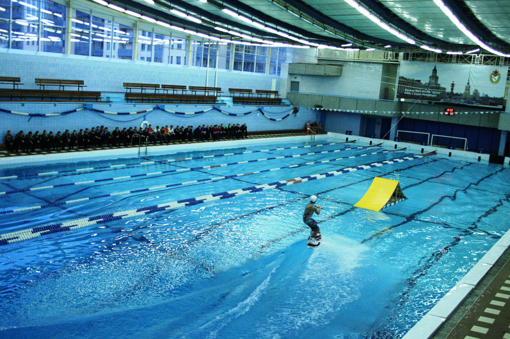 Поделились мастерством
В бассейне Спортивного клуба Армии Санкт-Петербурга состоялся мастер-класс по водным видам спорта для воспитанников учреждений довузовской подготовки Министерства обороны России.
Автор: cska.ru
04.12.2012
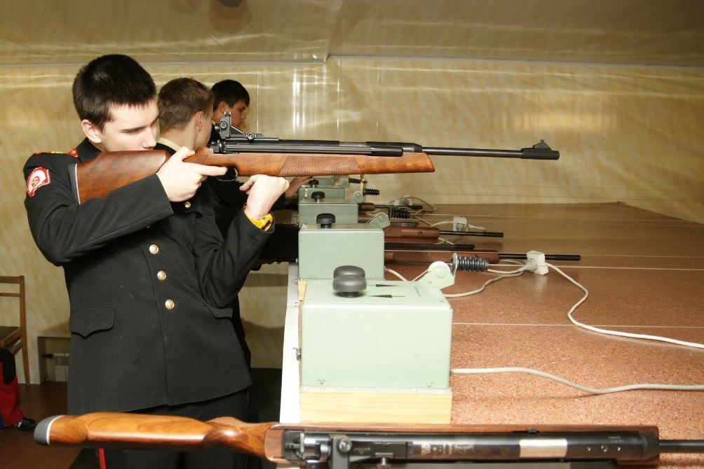 Кадетский мастер-класс
В стрелковом тире Спортивного центра (морской и физической подготовки, г. Кронштадт) филиала ФАУ МО РФ ЦСКА (СКА Санкт-Петербург) прошёл мастер-класс по пулевой стрельбе.
Автор: cska.ru
15.11.2012
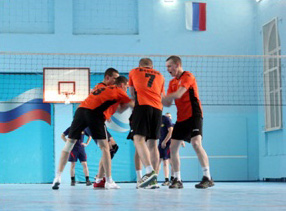 Сильнейший «Шторм»
В начале ноября на базе Спортивного центра морской и физической подготовки города. Калининграда состоялся Чемпионат Балтийского флота по волейболу.
Автор: cska.ru
13.11.2012
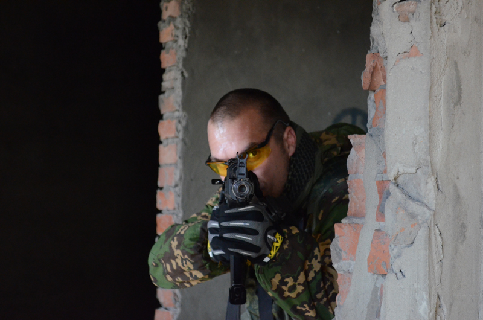 Условия, приближенные к боевым
На базе филиала ФАУ МО РФ ЦСКА (г. Геленджик) состоялся учебно-методический семинар по дисциплине армейский рукопашный бой.
Автор: cska.ru
30.10.2012
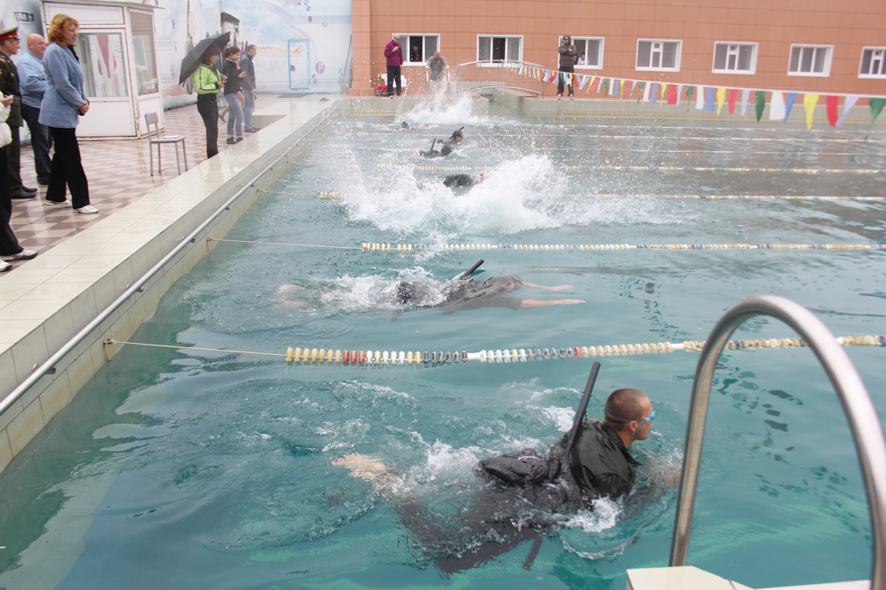 Открытый Кубок ЦСКА
На базе филиала ФАУ МО РФ ЦСКА (г.Ростов-на-Дону) прошли военно-спортивные соревнования «Открытый Кубок ЦСКА - чемпионат Южного военного округа» по плаванию с автоматом и нырянию в длину.
Автор: cska.ru
22.10.2012
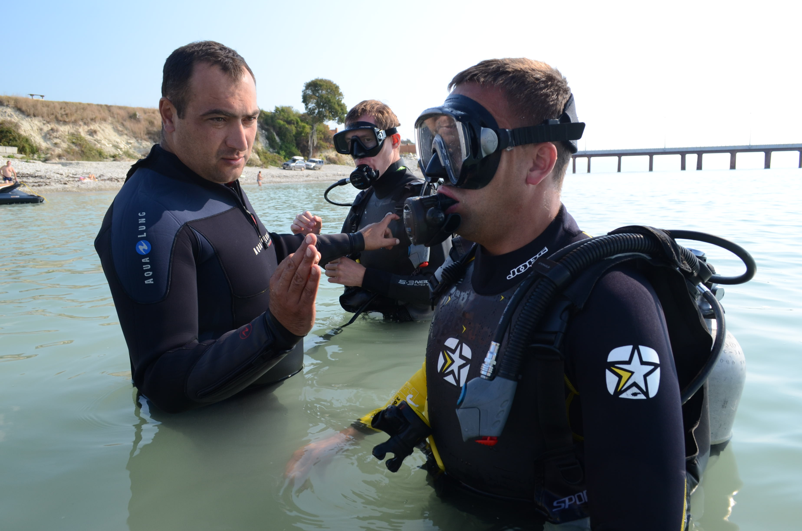 Легководолазная подготовка
Впервые на базе филиала ЦСКА (г. Геленджик) прошел учебно-методический сбор по дисциплине «Легководолазная подготовка и управление маломерными судами».
Автор: cska.ru
15.10.2012
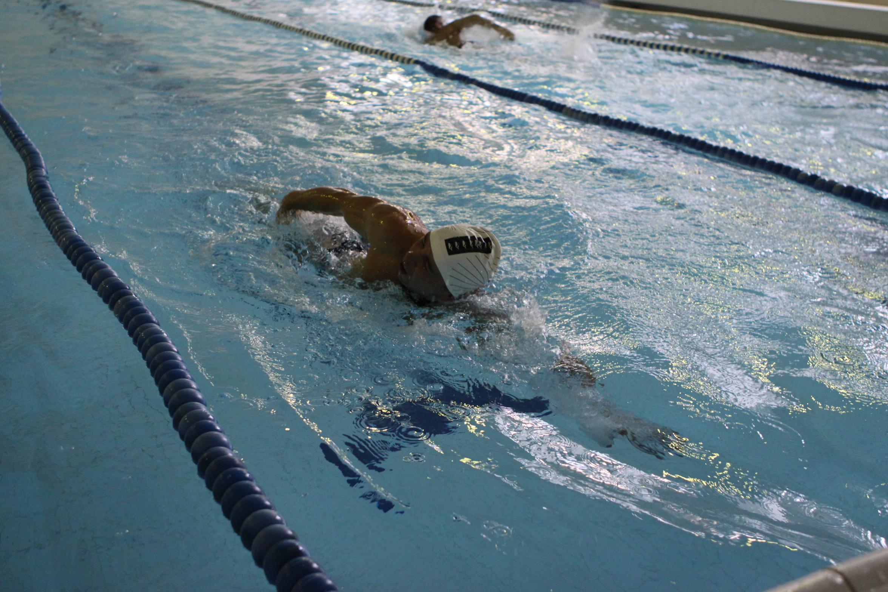 Офицеры улучшили результат
Второй год подряд на базе 27-ой гвардейской мотострелковой бригады проводился «Открытый Кубок ЦСКА» по военно-прикладным видам спорта.
Автор: cska.ru
21.09.2012
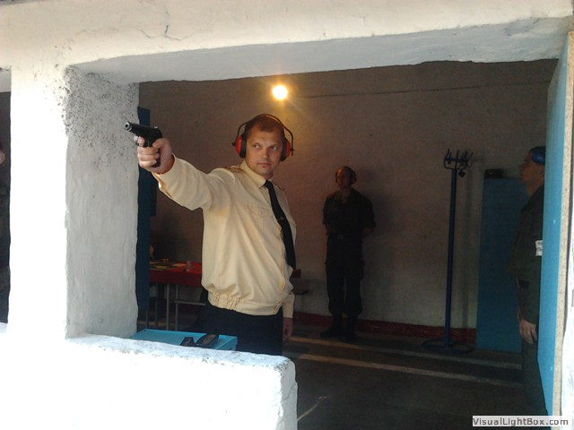 «Волна» на гребне успеха
На базе войсковой части города Калининграда состоялся чемпионат Балтийского флота по стрельбе из штатного оружия.
Автор: cska.ru
13.09.2012
 Победа к юбилею
Победа к юбилеюВ подмосковном Монино прошел международный турнир по регби, посвященный 100-летию создания Военно-воздушных сил Российской Федерации.
Автор: cska.ru
14.08.2012
 Сыграем в регби?
Сыграем в регби?15 – 18 августа в пос. Монино Ногинского района состоится международный турнир по регби, посвященный 100-летию создания Военно-воздушных сил Российской Федерации.
Автор: cska.ru
14.08.2012
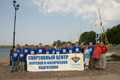 Из дальних странствий возвратясь…
29 июля в День Военно-Морского Флота в Кронштадт вернулись яхты Спортивного центра (морской и физической подготовки, г. Кронштадт) «Былина» (капитан А. Берёзкин), «Гемма» (капитан Е Кулакова), «Юнга»...
Автор: cska.ru
31.07.2012
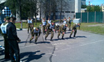 Спортмассовая работа для курсантов ВКА
Спортивные комплексы филиала ФАУ МО РФ ЦСКА (СКА, г. Санкт-Петербург) пользуются сегодня большой популярностью не только у горожан, ведущих активный образ жизни...
Автор: cska.ru
24.07.2012
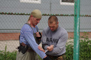 Ножевой бой в Самаре
В период с 11 по 15 июля на базе ЦСК ВВС, (г.Самара) прошел учебно-методический сбор по дисциплине «Рукопашный бой с использованием клинкового и огнестрельного оружия».
Автор: cska.ru
23.07.2012
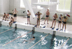 Легководолазная подготовка в Кронштадте
В соответствии с расписанием занятий воинских частей Ломоносовского и Кронштадтского гарнизонов в спортивном комплексе Спортивного центра (морской и физической подготовки, г. Кронштадт)...
Автор: cska.ru
20.07.2012
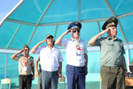 Снова первые!
В Астане завершилась IX Спартакиада дружественных Армий государств-участников Содружества Независимых государств. Гордость - вот главное чувство, которое чаще всего мы испытывали за прошедшую неделю.
Автор: cska.ru
11.07.2012
 Золотое начало российской сборной
Золотое начало российской сборнойСегодня в Астане в первый соревновательный день IX Спартакиады дружественных армий государств-участников СНГ на старт вышли гиревики.
Автор: cska.ru
04.07.2012
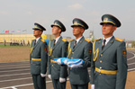 Дружба через спорт
В столице Казахстана Астане стартовала IX Спартакиада дружественных армий государств-участников Содружества Независимых Государств. В этом году она посвящена 20-летию образования Вооруженных Сил республики Казахстан.
Автор: cska.ru
03.07.2012
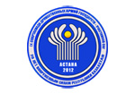 АРБ: жестко, не значит жестоко
В начале июля в столице Казахстана Астане состоится IX Спартакиада дружественных армий государств участников СНГ, посвященная 20-летию образования Вооруженных сил Республики Казахстан.
Автор: Венера Молдыбаева
14.06.2012
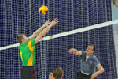 Армия и спорт – всегда едины!
21-26 марта в УСК ЦСКА прошли соревнования по волейболу в рамках Спартакиады центральных органов военного управления Минобороны России. Турнир получился зрелищным, со спортивной интригой и стремительным развитием событий на площадке.
Автор: Венера Молдыбаева
06.03.2012
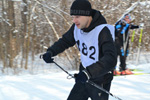 Лыжный этап Спартакиады
На специализированной лыжной базе 127 Спортивного клуба РВСН в городе Одинцово состоялись соревнования по лыжному спорту в рамках Спартакиады центральных органов военного управления Минобороны России.
Автор: cska.ru
06.03.2012